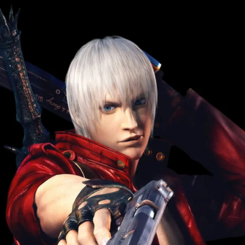
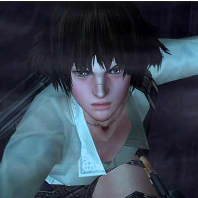
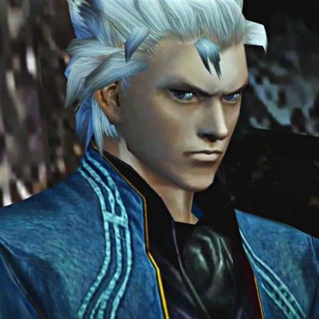
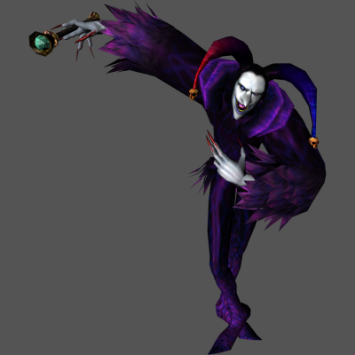

Dante

Dante é um híbrido humano-demônio, filho do lendário cavaleiro escuro Sparda e da humana Eva. Após o misterioso desaparecimento do pai, demônios enviados por Mundus atacaram sua casa, matando Eva e separando Dante de seu irmão gêmeo, Vergil. Marcado por essa tragédia, Dante passou a caçar demônios, adotando inicialmente o pseudônimo de "Tony Redgrave" para se esconder.
Armas e Poderes:
- Armas Brancas (Devil Arms): Rebellion (Espada principal), Cerberus (Nunchaku de gelo), Agni & Rudra (Espadas gêmeas), Nevan (Guitarra/Foice), Beowulf (Manoplas e botas).
- Armas de Fogo: Ebony & Ivory (Pistolas), Shotgun (Coyote-A), Artemis, Spiral, Kalina Ann.
- Estilos e Poderes: Trickster, Swordmaster, Gunslinger, Royalguard, Quicksilver, Doppelganger, Devil Trigger.
Lady

Originalmente chamada Mary Ann, é uma caçadora de demônios humana, motivada por uma trágica busca por vingança. Após seu pai, Arkham, sacrificar sua mãe, Kalina Ann, em um ritual para obter poder demoníaco, Mary renegou seu nome e família.
Armas e Poderes:
- Kalina Ann: Bazuca customizada com baioneta e gancho.
- Pistolas Customizadas: Modificadas com mira de precisão.
- Submetralhadora: Equipada com baioneta.
- Besta (Crossbow): Ataques rápidos à distância.
- Granadas & Espingarda: Dano em área e curto alcance.
- Motocicleta: Para locomoção e combate.
Vergil

Após a morte de sua mãe na infância, Vergil abraçou seu lado demoníaco para buscar poder, rejeitando a humanidade, em contraste com Dante. Ele empunha a katana Yamato, herdada de seu pai, e busca poder absoluto para evitar a fraqueza.
Armas e Poderes:
- Yamato: Katana que manipula o espaço-tempo.
- Beowulf: Manoplas e grevas de luz.
- Force Edge: Espada de Sparda.
Arkham / Jester

Arkham era um estudioso humano fraco e doente, obcecado por lendas demoníacas. Desejando o poder demoníaco para superar sua fraqueza, realizou um ritual sacrificando sua esposa, Kalina Ann, selando sua transformação e pavimentando o caminho para sua vilania.
Armas e Poderes:
- Humano/Jester: Velocidade, Teletransporte, Caminhar em paredes, Força Sobre-humana, Cura Acelerada.
- Forma Monstruosa: Tentáculos e Espinhas, Invocações (Legiões), Golpes de Braço, Invulnerabilidade Temporária.